Anthropic经济指数：Claude 3.7 Sonnet使用洞察
📖 中文摘要
专业术语注解
经济指数：追踪AI对劳动力市场影响的长期数据计划扩展思考模式：用户开启后模型用更长时间推理复杂问题增强/自动化拆分：按任务与职业统计人机协作与AI直完成的比例自下而上分类法：不预设任务清单、从数据归纳出的细粒度使用类别O*NET任务：美国劳工部定义的职业任务，用于映射对话用途📄 中文全文
- 分类： 社会影响（Societal Impacts）
- 来源： https://www.anthropic.com/research/anthropic-economic-index-insights-from-claude-sonnet-3-7
社会影响（Societal Impacts）
2025 年 3 月 27 日
 上月，我们启动了 Anthropic 经济指数（Anthropic Economic Index）——一项新计划，我们将定期发布旨在理解 AI 随时间对劳动力市场与经济影响的数据与研究。
上月，我们启动了 Anthropic 经济指数（Anthropic Economic Index）——一项新计划，我们将定期发布旨在理解 AI 随时间对劳动力市场与经济影响的数据与研究。
今天，我们发布该指数第二份研究报告，涵盖 Claude 3.7 Sonnet 发布后的 Claude.ai 使用数据——这是我们最新、能力最强的模型，在智能体式编程方面实力突出，并具备一种新的"扩展思考"（extended thinking）模式。
简而言之，我们最新的结果如下： * 自 Claude 3.7 Sonnet 发布以来，我们观察到编程、以及教育、科学与医疗应用的使用占比上升； * 人们主要将 Claude 3.7 Sonnet 新的"扩展思考"模式用于技术任务，包括与计算机科学研究员、软件开发人员、多媒体动画师和电子游戏设计师等职业相关的任务； * 我们正在发布任务层面与职业层面的增强/自动化细分数据。例如，与文案撰稿人和编辑相关的任务显示出最高程度的_任务迭代_，即人与模型共同撰写内容。相比之下，与笔译和口译相关的任务显示出最高的_指令式_行为之一——即模型在最少人工介入下完成任务。
此外，我们发布了一份首创的、自下而上的 Claude.ai 使用分类法。这一新数据集涵盖 630 个细粒度类别，从"帮助解决家庭管道、供水和维护问题"到"提供电池技术与充电系统的指导"。我们希望这一自下而上的分类法对研究者有用，并揭示那些自上而下、将使用映射到预设任务清单的方法可能遗漏的用例。
这些分析所用的数据集可免费下载。
继续阅读以了解更多我们的发现。
自 Claude 3.7 Sonnet 发布以来有何变化？
上月，我们推出了 Claude 3.7 Sonnet——我们迄今能力最强、具备"扩展思考模式"的模型。我们在发布后 11 天的数据上重新运行了先前分析，覆盖 100 万条匿名化的 Claude.ai Free 与 Pro 对话。我们分析的数据绝大部分来自 Claude 3.7 Sonnet，因为它是 Claude.ai 与我们移动应用的默认模型。
提醒一下，我们保护隐私的分析工具 Clio 将每次对话映射到美国劳工部 O*NET 数据库中的 17,000 个任务之一。我们随后考察与这些任务相关的职业及高层级职业类别的整体模式。
在审视这 100 万次对话的构成时，我们看到若干职业类别的使用占比温和上升，包括编程、教育与科学。尽管编程使用占比的上升在意料之中（因为 Claude 3.7 Sonnet 在编程基准上的得分提高），但其他类别的上升可能反映了 AI 在整个经济中持续的扩散、编程向这些领域的新颖应用，或是模型能力的意外提升。
 在原始数据样本后的两个月里，我们看到编程、教育与科学的使用占比上升。图表显示 Claude.ai Free 与 Pro 流量在 O*NET 高层级职业类别中的占比。灰色显示我们第一份报告（覆盖 25 年 12 月–25 年 1 月数据）的分布。彩色条显示我们新数据（25 年 2 月–3 月）中使用的增加（绿）与减少（蓝）。注意图表显示的是使用占比而非绝对使用量。参见附录中展示全部职业类别变化的图表。
在原始数据样本后的两个月里，我们看到编程、教育与科学的使用占比上升。图表显示 Claude.ai Free 与 Pro 流量在 O*NET 高层级职业类别中的占比。灰色显示我们第一份报告（覆盖 25 年 12 月–25 年 1 月数据）的分布。彩色条显示我们新数据（25 年 2 月–3 月）中使用的增加（绿）与减少（蓝）。注意图表显示的是使用占比而非绝对使用量。参见附录中展示全部职业类别变化的图表。
人们如何使用扩展思考模式？
Claude 3.7 Sonnet 具备一种新的"扩展思考"模式，当用户启用时，模型能在回答更复杂问题时思考更久。
我们的分析显示，Claude 3.7 Sonnet 的扩展思考模式主要用于技术与创意问题解决场景。与计算机与信息研究科学家相关的任务以近 10% 的使用扩展思考率领先，其次是软件开发人员约 8%。与数字创意角色相关的任务，如多媒体艺术家（约 7%）与电子游戏设计师（约 6%），也显示出可观的使用。
尽管这些早期使用模式揭示了人们何时选择使用扩展思考模式的洞察，关于这一新模型能力仍留下许多重要问题。为推动该领域的进一步研究，我们发布了一个新数据集，将每个 O*NET 任务映射到其相关的思考模式占比。该数据集发布于我们的 Hugging Face 页面。
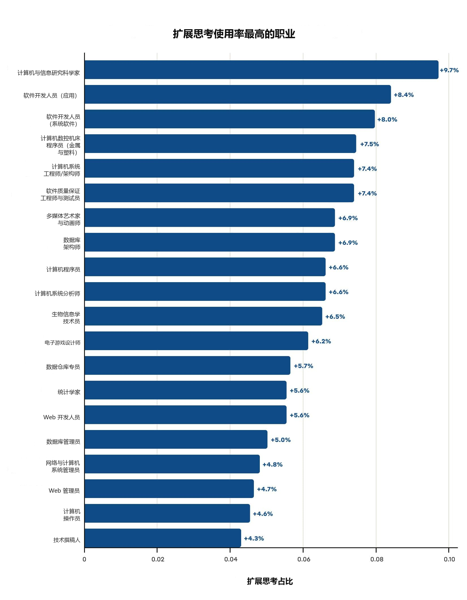
哪些任务的相关扩展思考模式使用最高？图表显示其相关任务中扩展思考模式使用率最高的 O*NET 职业。所示职业仅限于在数据中占比至少 0.5% 者。增强与自动化如何随任务与职业变化？
在上一封报告中，我们分析了 AI 使用如何在_增强_用途（如学习或对输出进行迭代）与_自动化_用途（如让模型直接完成任务或调试错误）之间变化。我们的分析显示，增强与自动化的平衡在我们的新数据中基本未变，增强仍占使用的 57%。然而，我们确实看到自动化与增强用途_类型_的一些变化——例如，我们看到_学习_交互（用户向 Claude 询问关于不同主题的信息或解释）从约 23% 上升到约 28%。
 增强与自动化的平衡在我们两次数据样本（V1 与 V2）之间的两个月里保持相对稳定，尽管学习类对话的占比明显增长。
增强与自动化的平衡在我们两次数据样本（V1 与 V2）之间的两个月里保持相对稳定，尽管学习类对话的占比明显增长。
我们通过研究者输入表单 收到了一些请求，要求在任务与职业层面发布自动化与增强数据。我们在本报告中正如此做了，在我们的 Hugging Face 页面 上提供这些数据。
按高层级职业类别拆分数据时，我们发现某些类别高度增强；例如，社区与社会服务任务（包含教育与指导咨询）的增强比例接近 75%。在另一个极端，与生产或计算机和数学职业相关的任务，我们看到平衡更偏向 50-50。我们没有看到任何自动化占主导的职业类别。
 各高层级职业类别中不同交互模式的比例。所示职业类别仅限于在数据中占比至少 0.5% 者。
各高层级职业类别中不同交互模式的比例。所示职业类别仅限于在数据中占比至少 0.5% 者。
更细化地看，我们还可以考察这些职业类别中的具体职业，以及与该职业相关的任务。例如，与文案撰稿人和编辑相关的任务显示出最高程度的_任务迭代_，即用户就各种写作与编辑任务与模型迭代。相比之下，与笔译和口译相关的任务显示出最高的_指令式_行为之一——即模型被用于以最少人工介入翻译文档。注意，O*NET 描述可能无法最优地代表 Claude 的用途——例如，尽管我们看到"美术家（含画家、雕刻家与插画家）"这一职业的使用，Claude 很可能更多被用于创作数字艺术而非绘画或雕塑。
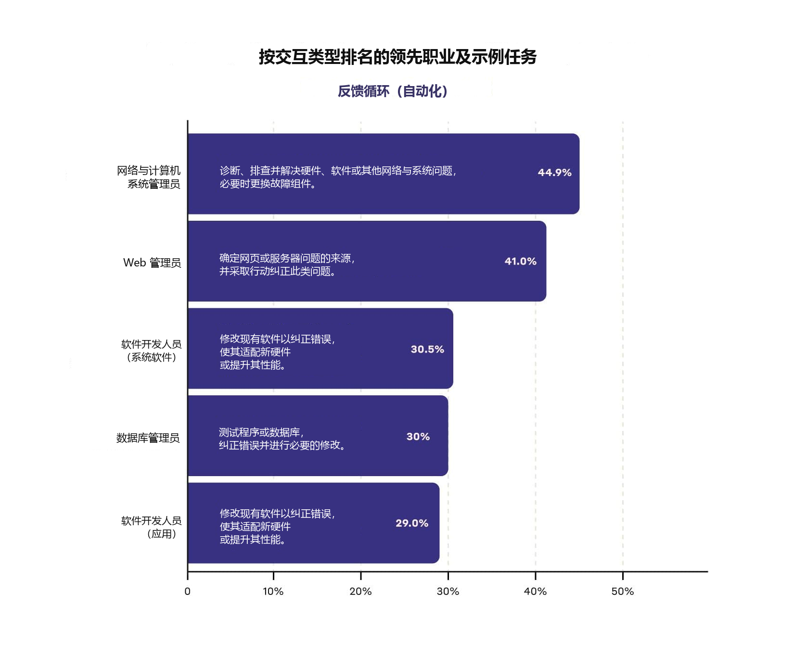
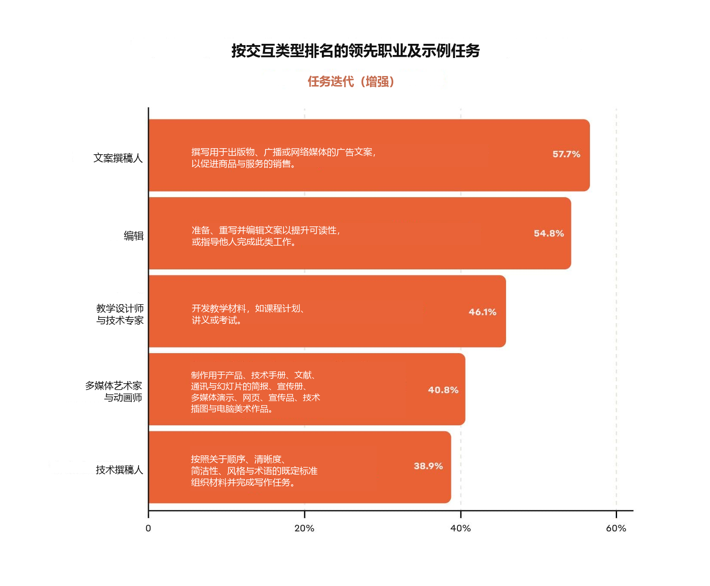
按交互类型排名的领先职业。对于五种交互类别（学习、任务迭代、验证、指令式与反馈循环）中的每一类，我们绘制该类别中使用占比最高的职业。例如，图书管理员在约 56% 的学习交互中占比最高，而文案撰稿人在任务迭代中以约 58% 领先。每个面板包含该职业中对这一交互模式贡献最大的 ONET 任务；这基于该任务出现的频率以及该交互模式在任务中使用的频率。其他学习模式的图表见附录。__注意，ONET 描述可能无法最优地代表 Claude 的用途——例如，尽管我们看到"美术家（含画家、雕刻家与插画家）"这一职业的使用，Claude.ai 上的使用可能更偏向数字艺术而非雕塑。仅显示在整个数据集中占比至少 0.5% 的职业。Claude.ai 使用情况的自下而上分类法
我们迄今的研究依赖于 ONET 的任务与职业数据集，后者由美国劳工部创建与维护。尽管 ONET 覆盖了大量任务，但对于可用于 ONET 中不存在的任务的通用模型而言，ONET 可能不是描述其能力的最佳分类法——因而可能被我们的分析遗漏。
为填补这一空白，我们发布一份新的、关于 Claude.ai 上用户活动模式的自下而上的数据集。该数据集同样由 Clio 创建，并使用与上述分析相同的匿名化对话数据集，这意味着它能够实现自上而下与自下而上方法之间的比较。它由 630 个细粒度簇组成，带有相关描述、普遍性指标，以及自动化/增强细分，组织为三个层级。
尽管我们将该数据集的详细分析留待未来工作，我们强调几个尤其有趣的簇： * 帮助解决供水管理系统与基础设施项目问题 * 创建带有交互式可视化能力的基于物理的模拟 * 帮助我进行字体选择、实现与故障排除 * 帮助我创建或改进求职申请材料 * 提供电池技术与充电系统的指导 * 帮助处理代码与数据库中的时区问题
结论
随着模型持续进步，我们对它们经济影响的衡量也必须随之进步。在我们的第二份报告中（覆盖 Claude 3.7 Sonnet 发布以来的数据），我们发现编程、教育与科学用例相对温和的增长，以及增强与自动化平衡无变化。我们发现 Claude 新的扩展思考模式在技术域与任务中使用频率最高，并识别出任务与职业间自动化/增强模式的规律。我们发布了这两项分析的数据集。
在未来数月，我们旨在持续追踪这些指标，并随着能力提升与模型在经济中持续应用而开发新的指标。
与我们合作
如果你有兴趣在 Anthropic 工作、研究 AI 对劳动力市场的影响，我们鼓励你申请我们的社会影响研究科学家与研究工程师岗位，以及我们的经济学家岗位。
附录
我们在此附录中分享一些额外结果与技术细节。
任务曲线
我们还重新计算了原始论文中的"任务使用深度"图。我们发现曲线与我们首次分析大体非常相似。如果说有什么不同，我们看到较新模型的曲线下面积略小——或许归因于我们对话样本中向编程的集中度上升。话虽如此，尽管过去两个月我们未看到该曲线发生剧烈变化，我们将持续监控，因为模型能力与产品界面在持续进步。
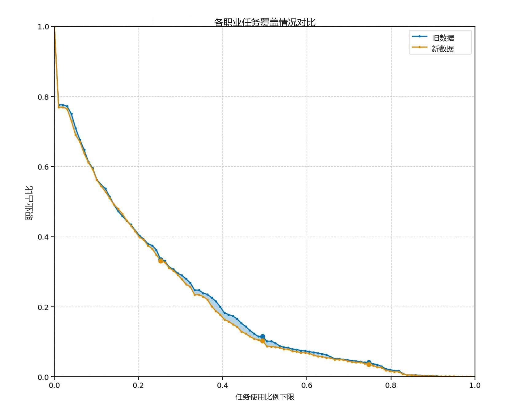
各职业的任务使用深度。例如，图表显示约 40% 的职业在其至少 20% 的任务中出现了 AI 使用（其中 x=0.2，y≈0.4）。我们第一份与第二份报告之间的曲线变化很小。各职业类别的完整变化
 各职业类别的使用百分比占比，显示我们原始报告中的数值（灰条）以及第二份报告中相应的增加（黄）与减少（蓝）。计算机和数学职业是绝对增幅最大的类别（+3%），而教育与科学等若干类别显示出显著百分比增长。
各职业类别的使用百分比占比，显示我们原始报告中的数值（灰条）以及第二份报告中相应的增加（黄）与减少（蓝）。计算机和数学职业是绝对增幅最大的类别（+3%），而教育与科学等若干类别显示出显著百分比增长。
其他交互模式的结果
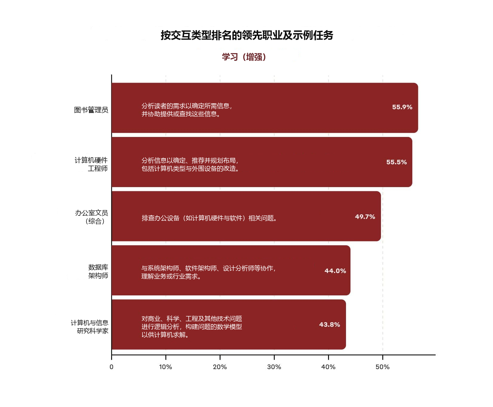
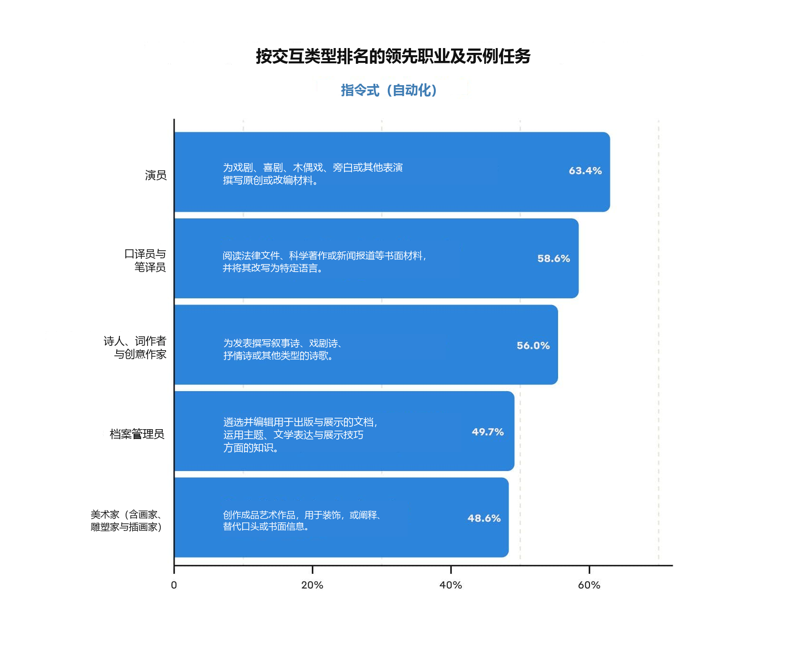
 按交互类型排名的领先职业。对于五种交互类别（学习、任务迭代、验证、指令式与反馈循环）中的每一类，我们绘制该类别中使用占比最高的职业。例如，图书管理员在约 56% 的学习交互中占比最高，而文案撰稿人在任务迭代中以约 58% 领先。每个面板包含该职业中对这一交互模式贡献最大的 ONET 任务；这基于该任务出现的频率以及该交互模式在任务中使用的频率。其他学习模式的图表见正文。__注意，ONET 描述可能无法最优地代表 Claude 的用途——例如，尽管我们看到"美术家（含画家、雕刻家与插画家）"这一职业的使用，Claude.ai 上的使用可能更偏向数字艺术而非雕塑。仅显示在整个数据集中占比至少 0.5% 的职业。
按交互类型排名的领先职业。对于五种交互类别（学习、任务迭代、验证、指令式与反馈循环）中的每一类，我们绘制该类别中使用占比最高的职业。例如，图书管理员在约 56% 的学习交互中占比最高，而文案撰稿人在任务迭代中以约 58% 领先。每个面板包含该职业中对这一交互模式贡献最大的 ONET 任务；这基于该任务出现的频率以及该交互模式在任务中使用的频率。其他学习模式的图表见正文。__注意，ONET 描述可能无法最优地代表 Claude 的用途——例如，尽管我们看到"美术家（含画家、雕刻家与插画家）"这一职业的使用，Claude.ai 上的使用可能更偏向数字艺术而非雕塑。仅显示在整个数据集中占比至少 0.5% 的职业。
其他方法论细节
尽管我们主要遵循原始报告的方法论，我们做了几处更改并在此记录以保证透明： * 与我们上一封报告不同，我们不再基于对话是否与某职业类别相关进行过滤。相反，我们只是过滤掉触发了我们安全分类器的对话。我们发现这些方法得出的结果与我们原始分析相似，同时保留了更多可通过自下而上使用分类法发布的数据。 * 我们在之前使用 Claude 3.5 Sonnet 的所有情况下改用 Claude 3.7 Sonnet。我们发现使用更新的模型，根据我们用于评估 Clio 准确性的内部基准，提高了分类的准确性。
相关内容
Claude 如何提升生物分子建模
Claude 让科学家用于预测与设计生物分子的开源模型更快、更省内存。Claude 在不到四周内优化了其中 30 多个模型，平均提速约 4 倍。它还创建了一个低内存模式，能在单个 NVIDIA GPU 节点上准确预测包含超过 10,000 个 token（氨基酸、核苷酸，以及来自小分子与离子的原子）的生物分子系统。 阅读更多
衡量 AI 模型的战术情报瞄准与常规武器能力
Anthropic 前沿红队（Frontier Red Team）开发了新评估，以衡量 AI 在战术情报瞄准与常规武器开发方面的能力。 阅读更多
近期网络安全事件的对齐评估
我们呈现对四起 Claude 模型未经授权访问真实第三方系统事件的对齐评估。 阅读更多
订阅 Anthropic Science
聚焦 AI 辅助发现、实用工作流以及各学科领域笔记的报道。
▸ 英文原文（点击展开）
Anthropic Economic Index: Insights from Claude 3.7 Sonnet
- Date: Mar 27, 2025
- Category: Societal Impacts
- Source: https://www.anthropic.com/research/anthropic-economic-index-insights-from-claude-sonnet-3-7
Societal ImpactsEconomics
Anthropic Economic Index: Insights from Claude 3.7 Sonnet
Mar 27, 2025
Last month, we launched the Anthropic Economic Index—a new initiative where we’re regularly releasing data and research aimed at understanding AI's effects on labor markets and the economy over time.
Today, we’re releasing our second research report from the Index, covering usage data on Claude.ai following the launch of Claude 3.7 Sonnet—our newest and most capable model with strengths in agentic coding and a new “extended thinking” mode.
Briefly, our latest results are the following:
* Since the launch of Claude 3.7 Sonnet, we’ve observed a rise in the share of usage for coding, as well as educational, science, and healthcare applications;
* People use Claude 3.7 Sonnet’s new “extended thinking” mode predominantly for technical tasks, including those associated with occupations like computer science researchers, software developers, multimedia animators, and video game designers;
* We're releasing data on augmentation / automation breakdowns on a task- and occupation-level. For example, tasks associated with copywriters and editors show the highest amount of task iteration , where the human and model co-write something together. By contrast, tasks associated with translators and interpreters show among the highest amounts of directive behavior—where the model completes the task with minimal human involvement.
In addition, we’re releasing a first-of-its-kind bottom-up taxonomy of usage on Claude.ai. This new dataset covers 630 granular categories ranging from “Help resolve household plumbing, water, and maintenance issues” to “Provide guidance on battery technologies and charging systems.” We hope this bottom-up taxonomy will be useful for researchers, and reveal use-cases that might be missed by top-down approaches which map usage onto a list of predefined tasks. The datasets for these analyses are freely available to download. Read on for more details on our findings.
What’s changed since the launch of Claude 3.7 Sonnet?
Last month, we introduced Claude 3.7 Sonnet, our most capable model yet with an “extended thinking mode”. We reran our previous analysis on data from the 11 days following the launch, covering 1 million anonymized Claude.ai Free and Pro conversations. The vast majority of the data we analyzed was from Claude 3.7 Sonnet, as it is set as the default on Claude.ai and our mobile app.
As a reminder, our privacy-preserving analysis tool, Clio, maps each conversation to one of 17,000 tasks in the U.S. Department of Labor’s ONET database. We then look at the overall patterns in the occupations and high-level occupational categories associated with those tasks.
When looking at the breakdown of these 1 million conversations, we see that the proportion of usage in several occupational categories has increased modestly, including coding, education and the sciences. While this increase in coding usage was expected due to Claude 3.7 Sonnet’s improved scores on coding benchmarks, the increase in these other categories could reflect either ongoing diffusion of AI throughout the economy, novel applications of coding to those domains, or unexpected capability improvements in the model.
![In the two months since our original data sample, we’ve seen an increase in the share of usage for coding, education, and the sciences. Graph shows share of Claude.ai Free and Pro traffic across top-level occupational categories in O*NET. Grey shows the distribution from our first report covering data from Dec ‘25 - Jan ‘25. Colored bars show an increase (green) and decrease (blue) in the share of usage for our new data from Feb ‘25 - March ‘25. Note that the graph shows the share of usage rather than absolute usage. See Appendix for chart showing change across the full list of occupational categories.](../assets/anthropic-economic-index-insights-from-claude-sonnet-3-7/img_001.jpg) _In the two months since our original data sample, we’ve seen an increase in the share of usage for coding, education, and the sciences. Graph shows share of Claude.ai Free and Pro traffic across top-level occupational categories in ONET. Grey shows the distribution from our first report covering data from Dec ‘25 - Jan ‘25. Colored bars show an increase (green) and decrease (blue) in the share of usage for our new data from Feb ‘25 - March ‘25. Note that the graph shows the share of usage rather than absolute usage. See Appendix for chart showing change across the full list of occupational categories._
_In the two months since our original data sample, we’ve seen an increase in the share of usage for coding, education, and the sciences. Graph shows share of Claude.ai Free and Pro traffic across top-level occupational categories in ONET. Grey shows the distribution from our first report covering data from Dec ‘25 - Jan ‘25. Colored bars show an increase (green) and decrease (blue) in the share of usage for our new data from Feb ‘25 - March ‘25. Note that the graph shows the share of usage rather than absolute usage. See Appendix for chart showing change across the full list of occupational categories._
How are people using extended thinking mode?
Claude 3.7 Sonnet features a new “extended thinking” mode which, when activated by the user, enables the model to think for longer when answering more complex questions.
Our analysis reveals that Claude 3.7 Sonnet's extended thinking mode is predominantly used in technical and creative problem-solving contexts. Tasks associated with computer and information research scientists lead with almost 10% using extended thinking, followed by software developers at around 8%. Tasks associated with digital creative roles like multimedia artists (~7%) and video game designers (~6%) also show substantial usage.
While these early usage patterns reveal insights about when people choose to use extended thinking mode, many important questions remain about this new model capability. To enable further research in this space, we’re releasing a new dataset that maps each ONET task to its associated thinking mode fraction. This dataset is available on our Hugging Face page.
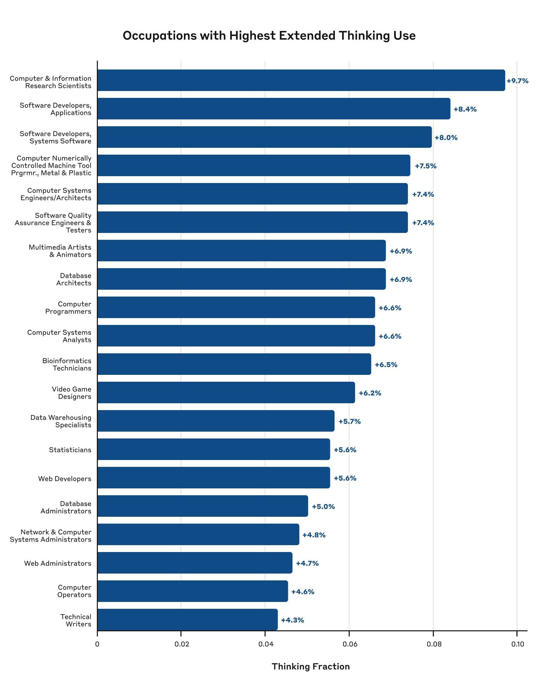
How does augmentation vs. automation vary by task and occupation?
In our last report, we analyzed how AI usage varied between augmentative uses, like learning or iterating on an output, and automative uses, like asking the model to directly complete a task or debug errors. Our analysis shows the balance of augmentation and automation is essentially unchanged in our new data, with augmentation still comprising 57% of usage. However, we did see some change in types of automation and augmentation uses—for example, we saw learning interactions, where the user asks Claude for information or explanation about different topics, rise from ~23% to ~28%.
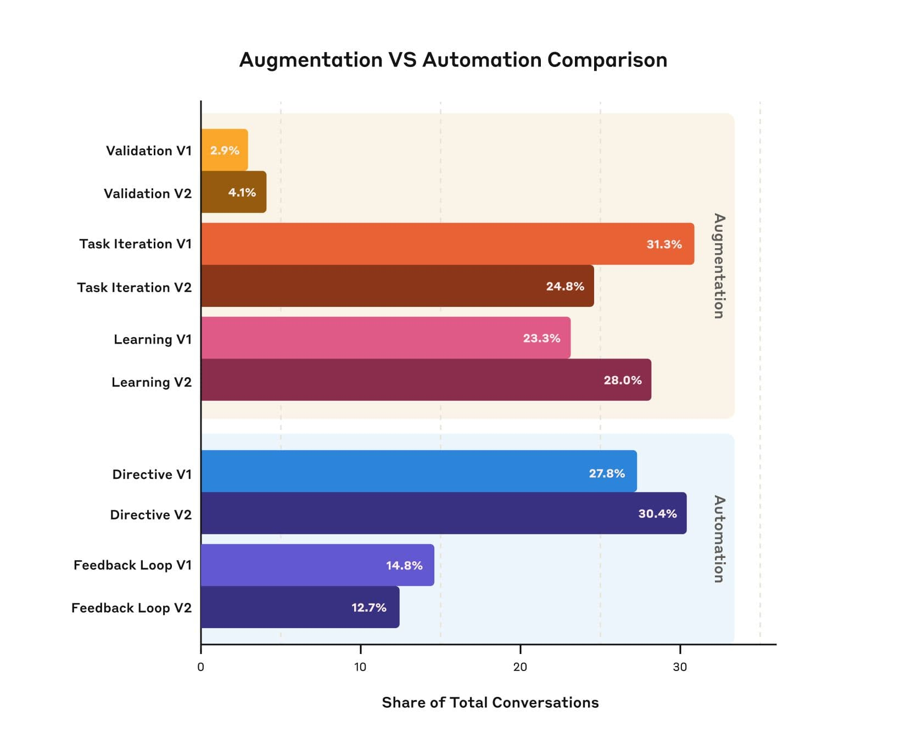
The balance of augmentation and automation has stayed relatively constant in the two months between our data samples (V1 and V2), though the share of Learning conversations has grown appreciably.We received a number of requests via our researcher input form to release automation and augmentation data at the level of tasks and occupations. We do just that in this report, providing this data on our Hugging Face page. When splitting the data by high-level occupational categories, we find some categories are highly augmentative; for example, Community and Social Service tasks, which includes education and guidance counseling, approach 75% augmentation. At the other end of the extreme, tasks associated with production or computer and mathematical occupations, we see the balance skew closer to 50-50%. We don’t see any occupational categories where automation dominates.
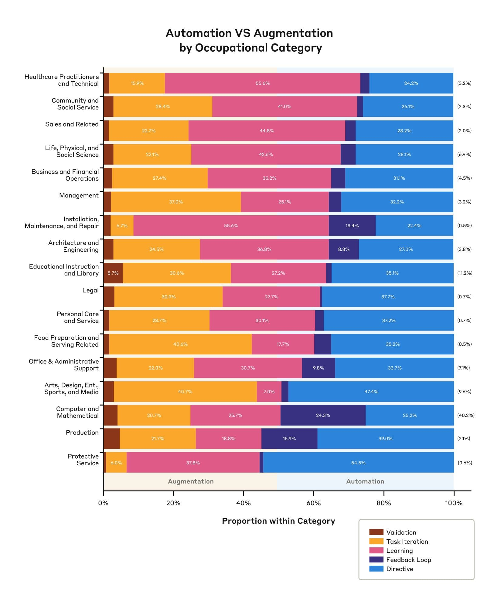
Proportion of different interaction modes across high-level occupational categories. Occupational categories shown are limited to those with at least 0.5% representation in the data.Getting more granular, we can also look at specific occupations within these occupational categories, as well as tasks associated with that occupation. For example, tasks associated with copywriters and editors show the highest amount of task iteration , where the user iterates on various writing and editing tasks with the model. By contrast, tasks associated with Translators and Interpreters show among the highest amounts of directive behavior—where the model is used for translating documents with minimal human involvement. Note that the ONET descriptions may not be optimally representative of what Claude is being used for—for example, while we see usage in the occupation “fine artists, including painters, sculptors, and illustrators,” Claude is probably used far more for creating digital art than for painting or sculpture.
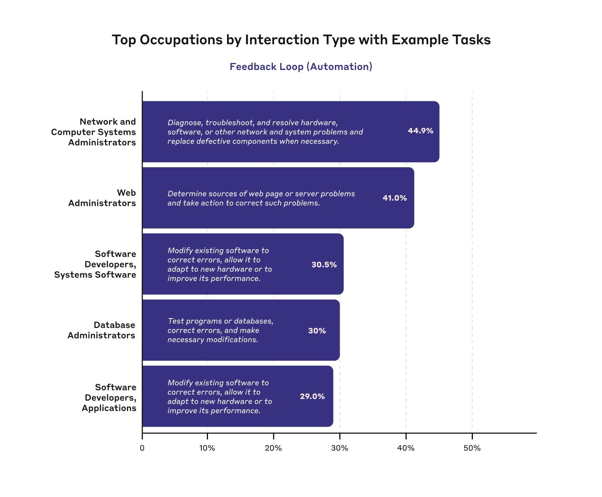 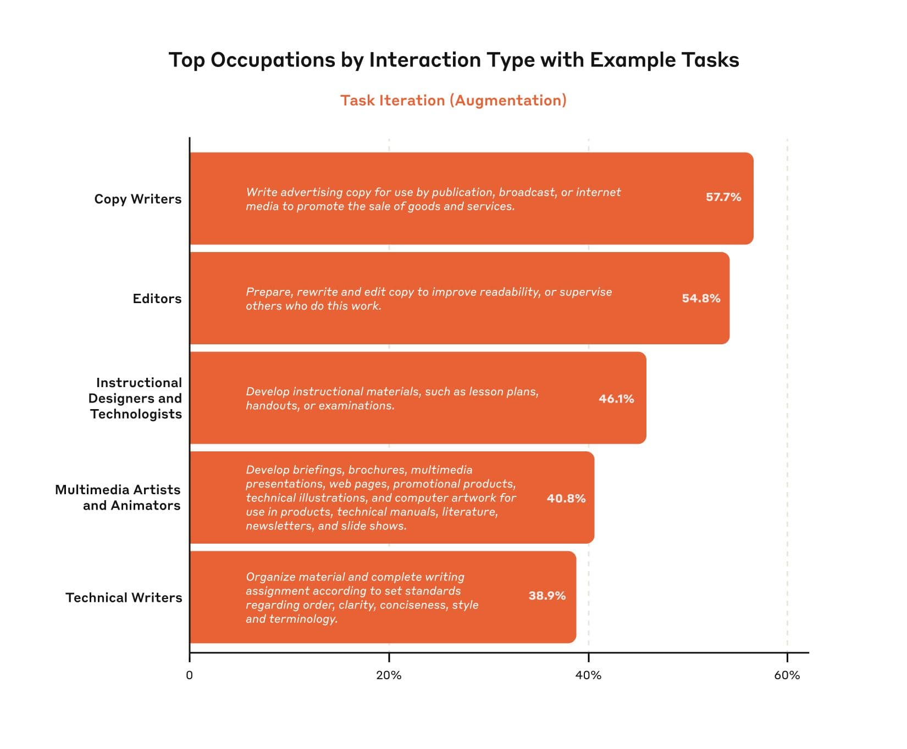
A bottom-up taxonomy of usage on Claude.ai
Our research so far has relied on the ONET dataset of tasks and occupations, which was created and maintained by the US Department of Labor. While ONET covers a very large number of tasks, ONET may not be the best taxonomy to describe the capabilities of general purpose models which can be used for tasks which are not present in ONET—and thus might be missed by our analysis. To address this gap, we’re releasing a new bottom-up dataset of user activity patterns on Claude.ai. This dataset was also created with Clio, and uses the same dataset of anonymized conversations used for the above analysis, meaning that it enables comparisons between top-down and bottom-up approaches. It consists of 630 granular clusters, with associated descriptions, prevalence metrics, and automation/augmentation breakdowns, organized into three levels of hierarchy. While we leave detailed analysis of this dataset to future work, we highlight a few particularly interesting clusters: * Help with water management systems and infrastructure projects * Create physics-based simulations with interactive visualization capabilities * Help me with font selection, implementation, and troubleshooting * Help me create or improve job application materials * Provide guidance on battery technologies and charging systems * Help with time zone handling in code and databases
Conclusion
As models continue to advance, so too must our measurement of their economic impacts. In our second report, covering data since the launch of Claude 3.7 Sonnet, we find relatively modest increases in coding, education, and scientific use cases, and no change in the balance of augmentation and automation. We find that Claude’s new extended thinking mode is used with the highest frequency in technical domains and tasks, and identify patterns in automation / augmentation patterns across tasks and occupations. We release datasets for both of these analyses. In the coming months, we aim to continue tracking these metrics and developing new ones as capabilities improve and models continue to be applied across the economy.
Work with us
If you’re interested in working at Anthropic to research the effects of AI on the labor market, we encourage you to apply for our Societal Impacts Research Scientist and Research Engineer roles, as well as our Economist role.
Appendix
We share a few additional results and technical details in this appendix.
Task Curve
We also recompute the “depth of task usage” plot from our original paper. We find generally a very similar curve to our first analysis. If anything we see slightly less area under the curve for the newer model—perhaps owing to an increase in concentration in our sample of conversations towards coding. That said, while we haven’t seen a dramatic change in this curve over the last two months, we will continue to monitor as model capabilities and product surfaces continue to advance.
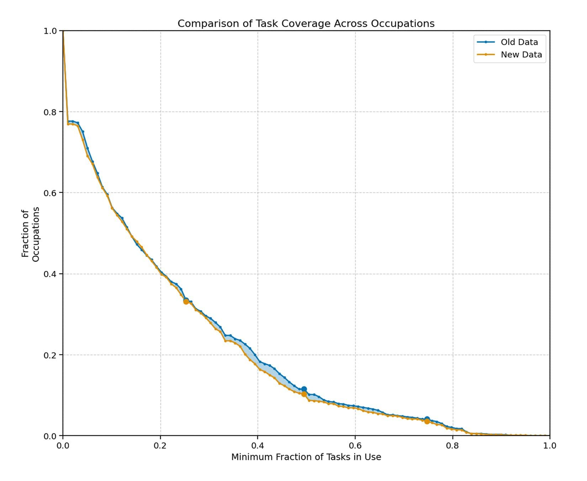
The depth of task usage across occupations. For example, the graph shows that about 40% of occupations see AI usage in at least 20% of their tasks (where x=0.2, y≈0.4). There is little change in the curves between our first and second reports.Full change across occupational categories
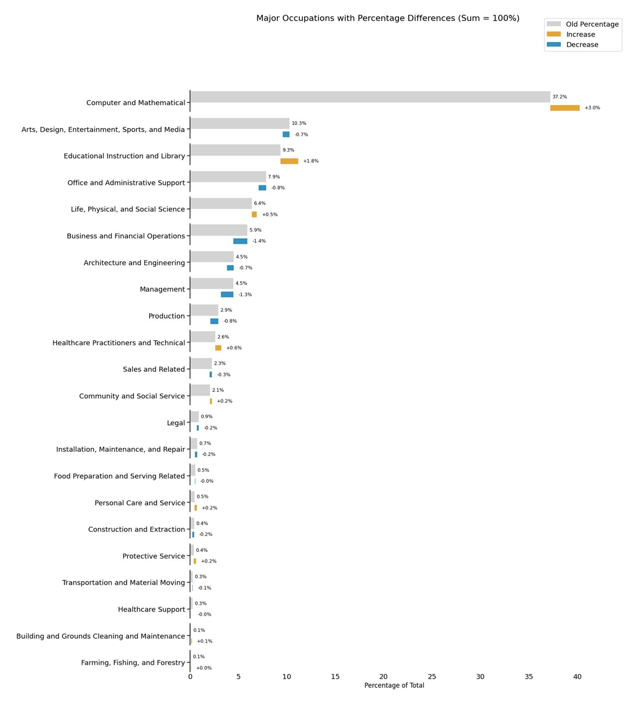
Percentage share of usage across occupational categories, showing values from our original report (gray bars) with corresponding increases (yellow) and decreases (blue) in the second report. computer and mathematical occupations represent the category with the largest absolute increase (+3%), while several categories like education and the sciences show notable percentage increases.Results for other interaction modes
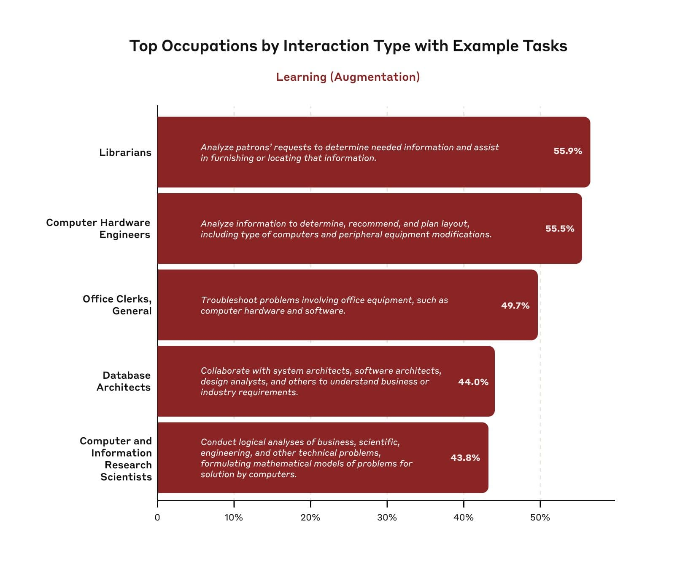
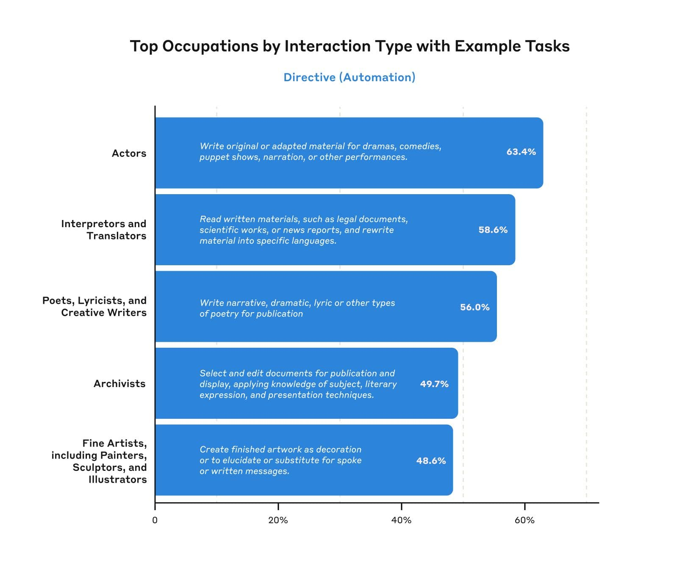
![Top occupations by interaction type. For each of the five interaction categories (Learning, Task Iteration, Validation, Directive, and Feedback Loop), we plot the occupations with the highest usage proportion within that category. For example, librarians show the highest proportion of learning interactions at ~56%, while copy writers lead in Task Iteration at ~58%. Each panel includes the O*NET task within the occupation that contributed most strongly to that interaction pattern; this is based on both how frequently the task occurs and how often that interaction mode is used within the task. Figures for the other learning modes are shown in the main body of the post. Note that the O*NET descriptions may not be optimally representative of what Claude is being used for—for example, while we see usage in the occupation “fine artists, including painters, sculptors, and illustrators,” usage on Claude.ai probably tilts more towards digital art than sculpture. Only occupations with at least 0.5% representation in the overall dataset are shown.](../assets/anthropic-economic-index-insights-from-claude-sonnet-3-7/img_011.jpg) Top occupations by interaction type. For each of the five interaction categories (Learning, Task Iteration, Validation, Directive, and Feedback Loop), we plot the occupations with the highest usage proportion within that category. For example, librarians show the highest proportion of learning interactions at ~56%, while copy writers lead in Task Iteration at ~58%. Each panel includes the ONET task within the occupation that contributed most strongly to that interaction pattern; this is based on both how frequently the task occurs and how often that interaction mode is used within the task. Figures for the other learning modes are shown in the main body of the post.__Note that the ONET descriptions may not be optimally representative of what Claude is being used for—for example, while we see usage in the occupation “fine artists, including painters, sculptors, and illustrators,” usage on Claude.ai probably tilts more towards digital art than sculpture. Only occupations with at least 0.5% representation in the overall dataset are shown.
Top occupations by interaction type. For each of the five interaction categories (Learning, Task Iteration, Validation, Directive, and Feedback Loop), we plot the occupations with the highest usage proportion within that category. For example, librarians show the highest proportion of learning interactions at ~56%, while copy writers lead in Task Iteration at ~58%. Each panel includes the ONET task within the occupation that contributed most strongly to that interaction pattern; this is based on both how frequently the task occurs and how often that interaction mode is used within the task. Figures for the other learning modes are shown in the main body of the post.__Note that the ONET descriptions may not be optimally representative of what Claude is being used for—for example, while we see usage in the occupation “fine artists, including painters, sculptors, and illustrators,” usage on Claude.ai probably tilts more towards digital art than sculpture. Only occupations with at least 0.5% representation in the overall dataset are shown.
Additional methodological details
While we mainly follow the methodology of our original report, we make a few changes which we document here for transparency: * In contrast to our last report, we do not filter based on whether conversations are relevant to an occupational category. Instead, we simply filter out conversations that flagged our safety classifiers. We find these approaches lead to similar results as our original analysis, while preserving more data that we can release via our bottom-up taxonomy of usage. * We use Claude 3.7 Sonnet in place of all cases where we previously used Claude 3.5 Sonnet. We found that using our newer model increased the accuracy of classifications according to the internal benchmarks we use to assess Clio’s accuracy.
Related content
How Claude is uplifting biomolecular modeling
Claude made the open-source models that scientists use to predict and design biomolecules faster and more memory-efficient. Claude optimized more than 30 of these models in just under four weeks, speeding them up roughly 4x on average. It also created a low-memory mode that enables the accurate prediction of biomolecular systems larger than 10,000 tokens (amino acids, nucleotides, and atoms from small molecules and ions) on a single NVIDIA GPU node. Read more
Measuring tactical intelligence targeting and conventional weapons capabilities of AI models
Anthropic’s Frontier Red Team developed new evaluations to measure AI capabilities in tactical intelligence targeting and conventional weapons development. Read more
An alignment assessment of recent cybersecurity incidents
We present an alignment assessment of four incidents in which Claude models gained unauthorized access to real third-party systems. Read more